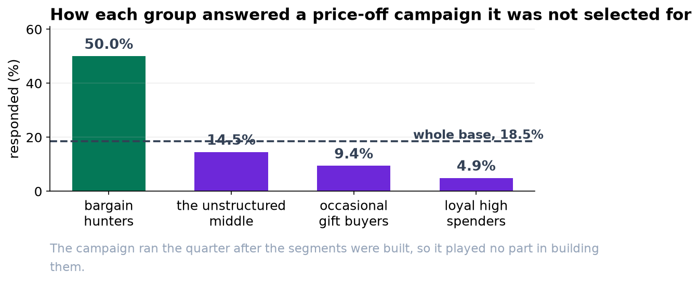
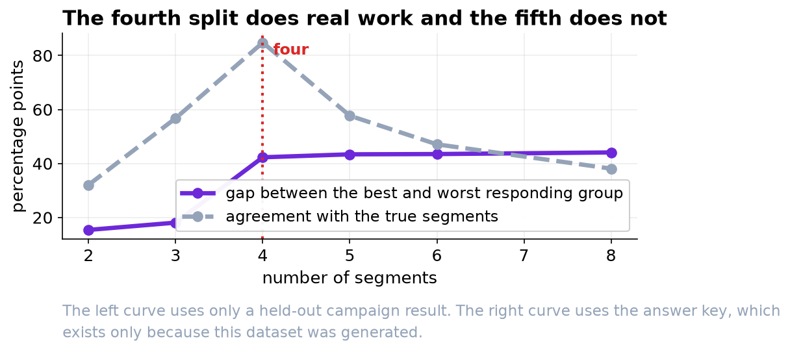

Three Segments Worth Naming, and Most of Your Base in None of Them.
The brief asked for four or five segments. There are three that behave distinctly, one group that looks like a segment and is not, and 55 percent of customers who belong to nothing.
Recommendation
Build the plan around three segments, and plan separately for the rest of the base. The three are real: they behave differently, and they responded to last quarter's price-off campaign at 48 percent, 10 percent and 4 percent against a base rate of 18. Together they are about 45 percent of your customers. The other 55 percent are not a fourth segment. They are a continuum, and a campaign aimed at 'them' is aimed at nobody in particular.
The three segments
| Segment | Size | Looks like | Responded to the price-off campaign |
|---|---|---|---|
| Bargain hunters | 877 | 33 visits a year, 27 dollar baskets, 79 percent of purchases on promotion, mostly online | 48% |
| Occasional gift buyers | 661 | 3 or 4 visits a year, 130 dollar baskets, a 24 percent return rate, almost entirely online | 10% |
| Loyal high spenders | 181 | 38 visits a year, 149 dollar baskets, seven years' tenure, rarely uses a promotion | 4% |
The gap between 48 percent and 4 percent is the practical point. A price-off campaign sent to the whole base costs the same per customer and does very different work depending on who receives it.

Why not four or five
We can produce four, five or ten segments on request; the software never refuses. The question is whether the extra ones separate anything. We tested this by holding back last quarter's campaign result, building segments without it, and then asking whether the segments differed on it.
| Number of segments | Gap between the best and worst responding segment |
|---|---|
| Two | 15 points |
| Three | 18 points |
| Four | 42 points |
| Five | 43 points |
| Eight | 44 points |
The fourth split is where the bargain hunters separate out, and it is worth 24 points of response. Everything after it adds a fraction of a point. That is the whole basis for the recommendation, and it is a better basis than any statistical fit measure, all of which suggested two.
The group we would not name
One of the four groups the analysis produced looks superficially like a segment: 819 customers, about nine visits a year, 42 dollar baskets. It responded to the campaign at 12.6 percent, against a base rate of 18.5. In other words it does not behave differently from the average customer in any way that matters.
This is the group that would have got a name, an owner and a budget. It is the densest patch of an otherwise featureless middle, and the only reason we can tell is that it failed the campaign test. Any segment that does not separate an outcome you care about is a label, not a segment.

Two cautions
These segments are validated for price promotions. They separate response to a price-off campaign extremely well. They may separate response to a loyalty programme, a service change or a new range badly. If next year's plan is not mainly about price, the segmentation should be re-validated against something closer to what it will be used for.
This is one year of behaviour, not a permanent property of a customer. Nothing here says a bargain hunter stays a bargain hunter. Before anything is built on top of these groups it is worth spending a week on how many customers moved between them from the previous year.